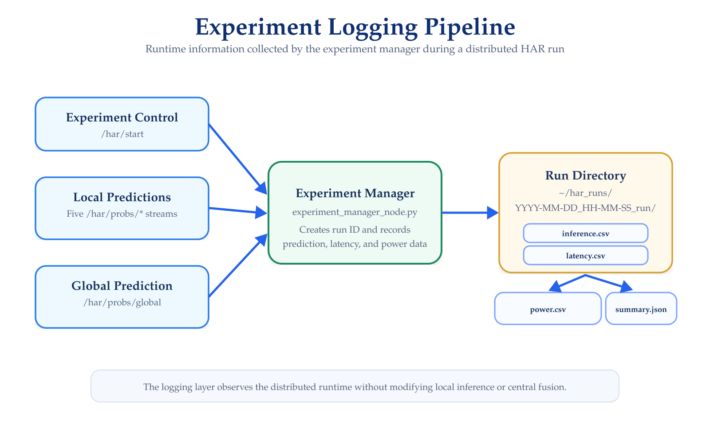

Experiments & Logs
Runtime Data Collection and Performance Measurements
The HAR Distributed Framework includes an experiment-management layer that records the information required to inspect predictions, timing behavior, and central-node power consumption during real-time execution.
The current runtime implementation uses:
experiment_manager_node.pyto organize each experiment into an independent run directory.
Experiment Logging Pipeline
The relationship between the distributed runtime and the generated experiment files is illustrated in Figure 1.

The experiment manager observes:
- The global prediction stream;
- The five local prediction streams;
- The experiment start/stop signal; and
- Power information available from the central Jetson.
Logging operates independently from the inference models and does not modify the local or central prediction process.
Run Organization
By default, experiment data are stored under:
~/har_runs/
Each new run creates a timestamp-based directory using the format:
YYYY-MM-DD_HH-MM-SS_run
For example:
~/har_runs/
└── 2026-08-30_14-32-15_run/
├── inference.csv
├── latency.csv
├── power.csv
└── summary.jsonA new directory is created when the experiment manager receives:
/har/start = true
The active files are closed and summarized when:
/har/start = false
inference.csv
The inference.csv file records the global prediction stream received by the experiment manager.
The current implementation stores:
| Column | Description |
|---|---|
run_id |
Identifier assigned to the experiment |
t_session_sec |
Time elapsed since the beginning of the run |
t_rx_epoch_sec |
Epoch time at which the global prediction is received |
sensor_id |
Identifier included in the global prediction message |
seq |
Global prediction sequence number |
K |
Number of activity classes |
pred_label |
Predicted class obtained using argmax |
pred_conf |
Probability associated with the predicted class |
dropped_pct |
Degradation/drop indicator propagated by the central node |
probs |
Complete global probability vector |
The predicted class is obtained as:
pred_label = argmax(probs)For the current six-class HAR configuration:
probs = [p0, p1, p2, p3, p4, p5]The activity-class mapping is documented under Models & Data.
The current experiment_manager_node.py does not write a true_label field to inference.csv.
Therefore, classification accuracy cannot be computed from this file alone unless ground-truth labels are provided by another component or merged during post-processing.
latency.csv
The latency.csv file contains timing information used to decompose the real-time response of the distributed system.
The main fields are:
| Column | Description |
|---|---|
run_id |
Experiment identifier |
t_session_sec |
Time elapsed since experiment start |
t_rx_ns |
Time at which the global message reaches the experiment manager |
t0_ns |
Reference time associated with the distributed input |
t_last_local_send_ns |
Latest local publication time contributing to the global prediction |
t_send_ns_global |
Time at which the central prediction is transmitted |
L_local_ms |
Distributed local-processing interval |
L_central_ms |
Central-processing interval |
L_net_global_ms |
Global-message transmission interval |
L1_e2e_ms |
End-to-end latency |
L_local_chest_ms |
Latest measured chest-node local latency |
L_local_left_knee_ms |
Latest measured left-knee local latency |
L_local_right_hand_ms |
Latest measured right-hand local latency |
L_local_left_hand_ms |
Latest measured left-hand local latency |
L_local_right_knee_ms |
Latest measured right-knee local latency |
L_local_mean_ms |
Mean of the available local-node latencies |
L_local_max_ms |
Maximum of the available local-node latencies |
Latency Decomposition
The experiment manager derives the principal latency components directly from the timestamps carried by the distributed prediction messages.
Local Processing
L_local_ms =
(t_last_local_send_ns - t0_ns) / 1e6Central Processing
L_central_ms =
(t_send_ns_global - t_last_local_send_ns) / 1e6Final Network Transfer
L_net_global_ms =
(t_rx_ns - t_send_ns_global) / 1e6End-to-End Latency
L1_e2e_ms =
(t_rx_ns - t0_ns) / 1e6These components make it possible to distinguish the time associated with distributed local processing, central processing, and delivery of the final global prediction.
L_local_ms represents the interval up to the latest local prediction participating in the central output.
The file also records the latest independently measured local latency for each sensing node, together with their mean and maximum values.
power.csv
When power monitoring is enabled, the experiment manager uses jtop from the jetson-stats package to sample power information from the central Jetson.
The current implementation records:
| Column | Description |
|---|---|
run_id |
Experiment identifier |
t_session_sec |
Time elapsed since experiment start |
t_epoch_sec |
Epoch timestamp of the power measurement |
power_tot_w |
Total power measurement |
power_tot_avg_w |
Average total power reported by jtop |
power_sys5v_w |
SYS5V power measurement when available |
raw_power_dict |
Complete power dictionary returned by jtop |
The default sampling configuration is:
10 HzThe available power rails depend on the Jetson platform.
Power-rail names are hardware-dependent.
Fields such as SYS5V, VDD_IN, or POM_5V_IN should not be assumed to exist on every Jetson model.
If jtop is unavailable, the prediction and latency logs can still operate while power monitoring remains disabled.
summary.json
When a run finishes, the experiment manager creates:
summary.jsonThe current summary includes:
run_id
start_time_ros_sec
rows_inference
rows_latency
rows_power
power_backend
notesThis file provides a compact description of the completed experiment and the number of samples written to the main logs.
Optional Local Edge Logs
The local edge implementations can also record sensor-level information independently from the central experiment manager.
The confirmed edge scripts include optional CSV logging containing:
- raw sensor windows;
- scaled model-input windows;
- local prediction probabilities;
- sequence information; and
- local timing information.
A typical filename follows a structure similar to:
<sensor_id>_run<id>_<timestamp>_raw_window_probs.csvThese files are primarily useful when debugging or validating the processing performed by an individual edge node.
They are separate from the centralized experiment directory created by experiment_manager_node.py.
Synchronization Metrics
Synchronization quality is evaluated using the temporal dispersion among the local predictions included in the same fusion event.
The primary metric is:
sync_span_msConceptually:
sync_span_ms =
latest local timestamp
-
earliest local timestampThis value measures how temporally close the five local probability messages are when they are grouped for central fusion.
The synchronization mechanism itself is documented in Communication & Synchronization.
Synchronization Analysis
The project also includes a synchronization-analysis script that processes:
central_sync_metrics.csvThe primary required field is:
sync_span_msWhen available, the analysis also considers:
fusion_mode
window_ref_span_ms
local_send_span_msThe synchronization analysis calculates statistics including:
Number of samples
Mean
Standard deviation
Minimum
Median
P90
P95
P99
Maximumand can generate a distribution of the synchronization span.
sync_span_ms is the primary synchronization metric.
window_ref_span_ms and local_send_span_ms are complementary diagnostic measurements and should not be interpreted as substitutes for the actual ATS acceptance criterion.
Experiment Verification
After stopping a run, verify that the expected directory was created:
ls ~/har_runs/Inspect the most recent run:
ls ~/har_runs/<RUN_ID>/The expected files are:
inference.csv
latency.csv
power.csv
summary.jsonInspect the first rows of a log using:
head ~/har_runs/<RUN_ID>/inference.csvor:
head ~/har_runs/<RUN_ID>/latency.csvVerify that rows were recorded throughout the experiment.
Quick Data Inspection
The number of recorded global predictions can be inspected using:
wc -l ~/har_runs/<RUN_ID>/inference.csvSimilarly:
wc -l ~/har_runs/<RUN_ID>/latency.csvRemember that the first row contains the CSV header.
Post-Experiment Analysis
The generated logs support several categories of system-level analysis.
| Analysis | Primary Data |
|---|---|
| Global prediction behavior | inference.csv |
| End-to-end latency | latency.csv |
| Latency decomposition | latency.csv |
| Per-node local latency | latency.csv |
| Central-node power behavior | power.csv |
| Run metadata | summary.json |
| Temporal synchronization | Synchronization metrics log |
Classification metrics additionally require ground-truth activity labels.
These labels must be associated with the recorded prediction sequence before computing metrics such as:
Accuracy
Precision
Recall
F1-score
Confusion matrixArchived Experiment Logs
Some experimental datasets produced during development may use earlier filenames such as:
time_inference.csv
time_latency.csv
time_power.csvThe documentation on this page follows the current experiment_manager_node.py implementation, which writes:
inference.csv
latency.csv
power.csv
summary.jsonWhen analyzing archived experiments, always verify the available column names before applying the current post-processing workflow.
Troubleshooting
Run Directory Is Not Created
Verify that experiment_manager_node.py is running and receiving:
/har/startCheck:
rostopic echo /har/startinference.csv Is Empty
Verify that the experiment manager receives:
/har/probs/globalusing:
rostopic echo /har/probs/globallatency.csv Contains Missing Values
Check whether the global Probs message contains valid:
t0_ns
t_last_local_send_ns
t_send_nsMissing timing information prevents the corresponding latency component from being calculated.
power.csv Is Empty
Verify that jtop is available:
jtopand that power logging is enabled.
Classification Metrics Cannot Be Computed
Verify that a ground-truth label stream or labeled post-processing file is available.
The current experiment-manager log contains the predicted class but does not independently determine the activity being performed by the participant.
Next Step
Continue with:
The next section describes how the existing implementation can be modified to support additional sensing nodes, alternative HAR models, new activity classes, different fusion strategies, and additional runtime measurements.